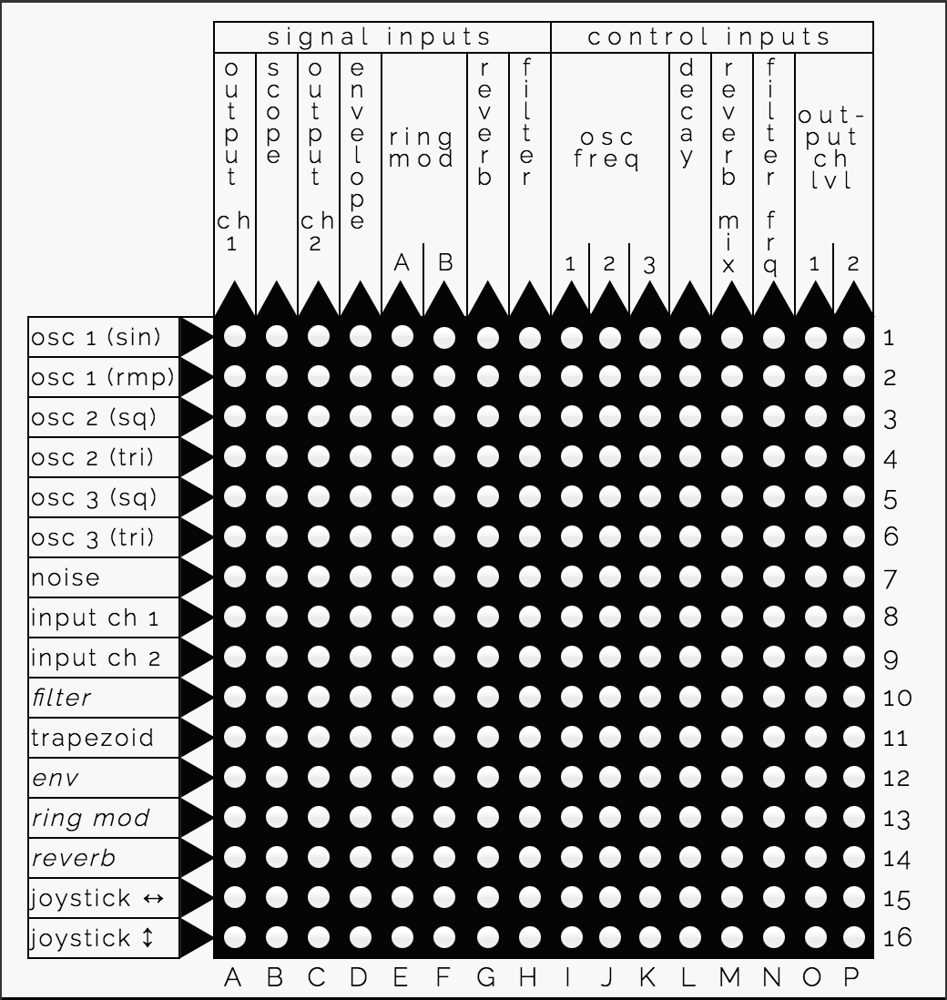

SYNTHI-JS is a JavaScript emulation of the legendary EMS Synthi A analog synthesizer.

SYNTHI-JS is a modular synthesizer that is made up of 11 components: oscillators, filters and so on. The patchboard at the center is used to connect component outputs (listed on the left of the patchboard) to component inputs (listed on the top).
To hear the output of any component, connect it to one of the Output Ch pins (A and C). You can also visualize the output of any component by connecting it to the Scope pin (B).
SYNTHI-JS adds a couple features that were not in the original Synthi A: a Memory Bank that can store up to 100 different patches/configurations and export them as text files, and an Input Sources panel that lets you use audio from anywhere on the Internet as an input.
SYNTHI-JS was built over a period of many months in 2015 and 2016 by Alex Nisnevich, using the Flocking library.
The Synthi A was a portable analog synthesizer made by EMS (Electronic Music Studios, London). in 1971. The Synthi A, along with the VCS 3 that it was based on, used a highly idiosyncratic design: unlike other analog synthesizers that relied on patch cables to connect components, it used pins in a patchboard matrix.
As a result, modifying sounds on a Synthi A is a much simpler and more organic procedure than on conventional analog synthesizers. This feature, along with its portability and capacity for unusual noises, made it popular among both progressive rock bands and soundtrack composers.
Among the most notable uses of the Synthi A are the synthesizer loop in Pink Floyd's "On the Run". The Synthi 100, a large-scale studio version of the VCS/Synthi A, was used heavily by the BBC to create sound effects for The Hitchhikers' Guide to the Galaxy, Doctor Who, and other radio and TV programs.

SYNTHI-JS can look daunting at first, but creating patches with it is actually quite straightforward.
This section of the manual covers general operation of SYNTHI-JS - see the next section for information and specifications of each individual synth component (oscillators, filters, etc).
The Patchboard
The patchboard connects the outputs of components to the inputs of other components.
For example, the simplest patch you can make is by just placing a pin on A1, which connects the output of Oscillator 1 to the input of Output Ch1, by default producing a 440 Hz sine wave sound.
It helps to separate the components into sources and treatments:
- Sources always produce a sound, and don't take any input. These include the oscillators, the noise generator, the input channels (assuming an input source is selected), and also the trapezoid output of the envelope shaper.
- Treatments take a signal as an input, alter it in some way, and return a new signal. These include the filter, the envelope output of the envelope shaper, the reverb module, and the ring modulator (which is unique in that it requires two inputs, not one). Treatments are italicized on the left side of the patchboard.
- The Output Amplifier is neither of these - it's the only component that has only an input pin and no output pin. Its output is your speakers!
Many components can additionally take a control voltage (CV) input to modify their functionality. For example, each of the oscillators has a frequency control pin - a signal can be sent there to modulate the frequency of the given oscillator.
The Scope
The scope (input B) can be used to observe any given output signal. The scope displays the amplitude of the given signal over time, with the top of the scope representing a control voltage of +6V and the bottom of the scope representing a control voltage of -6V. The frequency of a signal can be observed by watching its movement.
The Joystick

The joystick produces two user-controlled signals while the mouse is pressed down on it - one corresponding to the mouse's X-position from the center of the pad and one corresponding to the mouse's Y-position from the center of the pad. By default the signal produced ranges from -1V to +1V, but the Range knobs can be used to make the signal range up to -2V to +2V.
The Memory Banks

The memory banks can be used to store up to 100 patches. Clicking the Store button at a given memory location will store the current configuration of SYNTHI-JS (knobs and patchboard pins) into memory. Memory banks that have a patch stored under them are indicated by the letter S.
Preset memory banks that can not be modified are indicated by the letter P. See the Presets page of this manual for more information.
The Imp/Export button opens the Memory Import / Export dialog, which can be used to share the current patch or to load a patch that has been shared with you by someone else.
The Input Source Selector

The input source selector can be used to upload audio tracks for playback. Each track loaded this way will play in a loop on the given input channel (pins 8 and 9). You can adjust the playback speed and the start and end points of the track to loop between.
Oscillator 1
A sine and ramp (sawtooth) wave oscillator, with a frequency control going from 28 Hz to 7040 Hz. Outputs the sine and ramp waves on rows 1 and 2, respectively, and takes a frequency control input at column I.
Controls:
- Frequency: Controls the frequency of both the sine and ramp waves.
- Shape: Controls the sine wave only. At the middle position, a pure sine wave is produced.
- Sin Level: The signal level of the sine wave in the mix (up to +/- 3V).
- Ramp Level: The signal level of the ramp wave in the mix (up to +/- 4V).
Oscillator 2
A square and triangle wave oscillator, with a frequency control going from 28 Hz to 7040 Hz. Outputs the square and triangle waves on rows 3 and 4, respectively, and takes a frequency control input at column J.
Controls:
- Frequency: Controls the frequency of both the square and triangle waves.
- Shape: Affects both waves, as shown below:
- Squ Level: The signal level of the square wave in the mix (up to +/- 4V).
- Tri Level: The signal level of the triangle wave in the mix (up to +/- 6V).
Oscillator 3
A square and triangle wave oscillator, with a frequency control going from 0.025 (1/40) Hz to 512 Hz. Because it outputs such low frequency, it is primarily useful as a control input. Outputs the square and triangle waves on rows 5 and 6, respectively, and takes a frequency control input at column K.
Controls: (same as for Oscillator 2, above)
Noise Generator
Produces white or grey noise on row 7.
Controls:
- Colour: Controls which frequencies are emphasized. At the middle position, produces pure white noise. To the left, produces "darker" noise. To the right, produces "lighter" noise.
- Level: The output signal level (up to +/- 3V).
Ring Modulator
Takes two inputs at columns E and F and multiplies them together, outputting the result in row 13.
Controls:
- Level: The level of the signal produced.
Filter/Oscillator
(Note: I haven't yet been able to get the Filter/Oscillator in SYNTHI-JS to work exactly the way that it should.)
Removes selected frequencies from its input signal. Depending on the position of the Response control, it can function as a low-pass or band-pass filter or as a very pure sine-wave oscillator. Takes an input signal at column H and outputs a signal on row 10. The filter frequency can be modulated by a control signal at column N.
Controls:
- Frequency: Controls the cutoff frequency of the filter.
- Response: Selects the mode of the filter and its response level. If turned far to the left, the filter functions as a low-pass filter; if turned near the center, the filter functions as a band-pass filter; if turned far to the right, the filter should function as an oscillator.
- Level: The level of the signal produced.
Envelope Shaper
A repeating 4-stage envelope (attack/on/decay/off) that controls the shape of a signal:
Takes an input signal at column D and optionally a control signal at column L to modify the Decay time. Outputs the envelope-shaped signal on row 12 and the trapezoid wave itself (for use as a control signal) on row 11. The envelope is self-triggering, but can also be manually triggered with the manual trigger button near the joystick.
Controls:
- Attack: The amount of time for the "attack" step during which a sound "grows" (up to 1 sec).
- On: The amount of time for the "on" step during which a sound stays at its maximum volume (up to 2.5 sec).
- Decay: The amount of time for the "decay" step during which a sound fades away (up to 15 sec).
- Off: The amount of time for the "off" step during which there is no sound (up to 10 sec). When the "off" step time is set to 9 sec or higher, the envelope shaper stops self-triggering and can only be manually triggered
- Trapezoid Lvl: The level of the trapezoid wave outputted on row 11 (at maximum, -3V to +4V).
- Signal Lvl: The level of the output signal outputted on row 12.
Reverberation
Simulates a spring-driven reverberation unit to make a signal sound as though it's coming through a large room. Takes an input signal at column G and outputs a signal on row 14. The mix amount can be modulated by a control signal at column M.
Controls:
- Mix: The proportion of direct to reverberated output. Turn rightward to add more reverberation.
- Level: The level of the signal produced.
Input Amplifiers
Loops the audio tracks specified in the Input Sources panel, if any, and outputs them in rows 8 and 9 for input channels 1 and 2 respectively.
Controls:
- Channel 1: The level of the input channel 1 signal produced.
- Channel 2: The level of the input channel 2 signal produced.
Output Amplifiers
Takes inputs from columns 1 and 3 for output channels 1 and 2, respectively, and plays them through your speakers.
Controls:
- Filter: These controls adjust bass or treble attenuation for each output channel. Setting them to the middle position results in a "flat" response.
- Level: The controls adjust the volume of each output channel.
- Pan: These controls adjust the stereo pan of each output channel. By default, channel 1 pans fully to the left and channel 2 pans fully to the right.
As of version 1.1.0, SYNTHI-JS comes with some preset patches to give you some examples of what you can do! Preset patches occupy memory banks 95-99 and are not modifiable.
Here are the current available presets:
| 00 | Crashing waves |
| 01 | Modem connection sound (control with joystick) |
| 02 | Bowing effect (use the joystick to make sounds; Ex.12 in the SYNTHI manual) |
| 03 | "Bounce" (failed attempt at Ex.6 in SYNTHI manual) |
| 04 | Overtone bell (Ex.4 in the SYNTHI manual) |
GitHub Repository
SYNTHI-JS development happens on its GitHub repository. If you want to file a bug report, help work on some features, or just take a peek at the source code, that's the place to go.
Missing Features
My goal is to make as faithful a reproduction of the Synthi A as possible, but there have been features of it that I have been unable to reproduce, whether because of conceptual difficulties or just lack of time. Here are the ones that I know of at the moment:
- The ability to have circular chains of component dependencies (for example, A depends on B and B depends on A). As far as I can tell, this is not possible in Flocking, but I'm open to suggestions.
- The EMS DK keyboard.
- The EMS KS sequencer.
- In general, many of the components of SYNTHI-JS don't follow the specs as well as they could. As I don't personally have a Synthi A to test, I've been doing the best I could from videos and spec sheets. All feedback is much appreciated.
Version History
- Version 1.2.1 (2016-06-11): Manual Trigger button for Envelope Shaper, more accurate state loading, minor UI improvements.
- Version 1.2.0 (2016-06-10): Settings panel with knob controls, restyled patchboard, upload support via S3.
- Version 1.1.0 (2016-05-25): Preset banks 95-99 (now called 00-04), knob control improvements, some adjustments to Reverb module.
- Version 1.0.1 (2016-05-25): Fixed bug with component order not being properly set, causing issues for patches using the Ring Modulator.
- Version 1.0.0 (2016-05-21): Initial release.
Got any questions or comments about SYNTHI-JS? Feel free to email me at alex [dot] nisnevich [at] gmail [dot] com.
If you notice any bugs or missing features, the best place to report them is the SYNTHI-JS GitHub page.